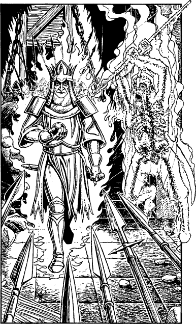

258
Relentlessly the enemy pour their fire upon the north and west city walls, until the black sky above Tahou takes on a vivid scarlet glow. The defenders look to their weapons uneasily and pray that the gods are with them, at least until dawn. And when the first rays of dawn light show above the eastern hills, no mists enshroud the armies of Darklord Gnaag—they are massed in all their glory, awaiting the order to attack. You cast your eye across this sea of doom and mark the many regiments of evil that are ranged against the walls of Tahou.
The armoured legions of Vassagonia are the first to advance, moving in ordered columns towards the West Gate. At their head walks a figure sheathed in gold around whom a cold blue fire glows intensely. He strides within range of the city archers and they send a cloud of arrows to greet him, but these shatter and crackle when they encounter his impregnable glowing shield. He crosses the siege bridge and halts before the West Gate. In his hand is an orb of black metal. He holds it before him and mouths an incantation. Instantly a bolt of scarlet flame lances from the orb, destroying the great doors with a thunderous boom. Proudly he strides into the city and the defenders melt before him. One summons enough courage to attack him with a spear. There is a crackling flash and in an instant the soldier is transformed into a pile of glowing ash.

He advances unchecked and undaunted by all attacks, for they cannot penetrate his magical shield. Only when he comes face to face with you does he stop.
‘I have come for you, Lone Wolf,’ he says, a cruel smile on his lips. You gaze into the ice-cold eyes of Zakhan Kimah, ruler of Vassagonia. As he raises his orb of black metal, you steel yourself for the battle that is about to commence.
If you have the Sommerswerd, turn to 48.
If you do not possess this Special Item, turn to 210.